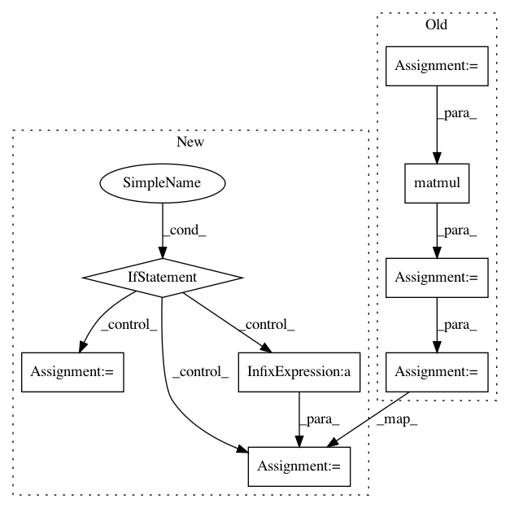

1c5e3fcea70bcff529ba89901c441db56a69b53c,geomstats/geometry/spd_matrices_space.py,SPDMetricAffine,exp,#SPDMetricAffine#Any#Any#,435
Before Change
inv_sqrt_base_point = gs.linalg.inv(sqrt_base_point)
tangent_vec_at_id = gs.matmul(inv_sqrt_base_point,
tangent_vec)
tangent_vec_at_id = gs.matmul(tangent_vec_at_id,
inv_sqrt_base_point)
exp_from_id = gs.linalg.expm(tangent_vec_at_id)
exp = gs.matmul(exp_from_id, sqrt_base_point)
exp = gs.matmul(sqrt_base_point, exp)
return exp
def log(self, point, base_point):
After Change
if n_base_points == 1:
base_point = gs.tile(base_point, (n_tangent_vecs, 1, 1))
if power_affine == 1:
sqrt_base_point = gs.linalg.sqrtm(base_point)
inv_sqrt_base_point = gs.linalg.inv(sqrt_base_point)
exp = self._aux_exp(tangent_vec, sqrt_base_point, inv_sqrt_base_point)
else:
modified_tangent_vec = self.space.differential_power(power_affine,
tangent_vec,
base_point)
power_sqrt_base_point = gs.linalg.powerm(base_point, power_affine/2)
power_inv_sqrt_base_point = gs.linalg.inv(power_sqrt_base_point)
exp = self._aux_exp(modified_tangent_vec, power_sqrt_base_point,
power_inv_sqrt_base_point)
exp = gs.linalg.powerm(exp, 1/power_affine)
return exp
def log(self, point, base_point):
In pattern: SUPERPATTERN
Frequency: 4
Non-data size: 8
Instances
Project Name: geomstats/geomstats
Commit Name: 1c5e3fcea70bcff529ba89901c441db56a69b53c
Time: 2020-01-17
Author: yann.thanwerdas@gmail.com
File Name: geomstats/geometry/spd_matrices_space.py
Class Name: SPDMetricAffine
Method Name: exp
Project Name: cornellius-gp/gpytorch
Commit Name: 30ca6105f64f1cbbdb7f012bc848ed840e6f3682
Time: 2019-04-12
Author: gpleiss@gmail.com
File Name: gpytorch/models/exact_prediction_strategies.py
Class Name: DefaultPredictionStrategy
Method Name: exact_predictive_mean
Project Name: geomstats/geomstats
Commit Name: b76dcd22dfb638b31e1bc5f51297173515945012
Time: 2020-01-17
Author: yann.thanwerdas@gmail.com
File Name: geomstats/geometry/spd_matrices_space.py
Class Name: SPDMetricAffine
Method Name: log
Project Name: cornellius-gp/gpytorch
Commit Name: 76c081b840cd71b20d8ac8692b312ebef95eae75
Time: 2019-04-11
Author: gpleiss@gmail.com
File Name: gpytorch/models/exact_prediction_strategies.py
Class Name: DefaultPredictionStrategy
Method Name: exact_predictive_mean